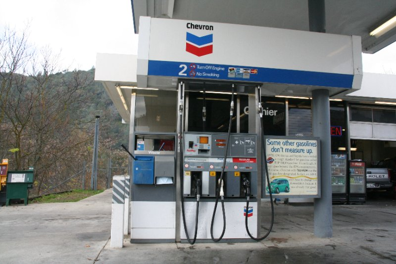

![NTK]()

Gasoline Drove More Than Half of September's Price Jump, and the War in Iran Is Why
Prices rose 0.6% in September, the largest monthly jump in five months. Gasoline accounted for more than half of it, up 9.1% in a single month and 34.2% over the year (Al Jazeera). Heating oil, which much of the Northeast burns through winter, rose 15.3% in the month and 74.2% over the year (The New York Times). Patrick DeHaan of GasBuddy counted 158 days this year with average gas above $4 a gallon, more than any year on record (Al Jazeera).
The paycheck side is worse. Inflation-adjusted hourly earnings have fallen year over year for six straight months, and sit almost exactly where they were when Trump was sworn in for a second term (The New York Times). For the average worker, that is zero real wage growth in nearly two years.
Social Security Raised Checks 3.6%, and the Advocates Said It Still Isn't Enough
Retirees are where that arithmetic lands first. The Social Security Administration announced a 3.6% cost-of-living increase for 2027, about $75 more a month on an average check of $2,170 (CBS News). The adjustment trails September's 3.7% reading. Nancy Altman of Social Security Works said people are getting crushed by prices, and that the COLA is not keeping up. Medicare has not yet announced its 2027 premiums, and Part B comes straight out of the check, which could swallow part of the raise before it arrives (CBS News).
Commissioner Frank Bisignano's statement credited Trump for "better, faster, higher-quality service" (Houston Chronicle). Shannon Benton of the Senior Citizens League called it another year of a COLA that falls short.
The Fed Raised Rates Last Month, and September's Numbers Made a Second Hike Plausible
The central bank was already tightening. It raised rates by a quarter point in September, the first hike in three years, to a range of 3.75% to 4.00% (Al Jazeera). Officials had said they had time to wait. Core inflation, which strips out food and energy, rose 0.3% in September and 2.6% over the year, and the narrower "supercore" gauge ran hot for a second month (The New York Times). The two-year Treasury yield jumped 0.1 percentage point to 4.88% (The New York Times). Futures markets put the odds of an October hike at 47.1% (Al Jazeera).
Cleveland Fed President Beth Hammack, who has made anchored expectations her signature worry, wrote that consumers are beginning to accept high inflation as "a fact of life." The New York Fed's survey found the one-year inflation outlook at 3.9%, its highest in more than three years (CNBC). Gary Richardson, a former Fed historian, put the stakes plainly: expectations have to stay anchored for rate policy to work at all.
The White House Called Affordability a Hoax. The Voters It Needs Disagree.
In Wasilla, Alaska, on Tuesday, Trump called people who raise affordability "just stupid people" and called the energy costs a "small price to pay" for the war (Daily Beast). A Reuters/Ipsos poll found about 78% of Americans blame his policies for higher prices (Al Jazeera). Republicans now defend seats in Texas, Alaska and Kansas that Trump won by double digits two years ago.
The administration is spending to close the gap: $90 payments to Medicare seniors, $500 rebates for some Affordable Care Act customers, and Russian diesel imports allowed after years of sanctions. Trump also promised a $5,000 check to every adult citizen if Republicans hold Congress, a plan that needs congressional approval and would cost more than $1 trillion (The New York Times). Many Republicans fear the offers come too late.
The October meeting is the one Warsh controls. The one after it is the one voters will feel.
The Fed Will Most Likely Hold in October, Then Raise in December
The Bloomberg headline says Warsh gets the final word in Bangkok, and the word is likely to be patience. He has vowed not to steer markets with his own near-term signals (Bloomberg). A hike days before the midterms would hand Democrats a second grievance on top of prices, and a hold costs the Fed little because the core number rose a modest 0.3%. Traders in federal funds futures already expect the next increase in December (The New York Times). The most likely outcome is a hold in late October, with language that leaves December open. The risk to that forecast is Hammack. If the Cleveland Fed president dissents in favor of a hike, the vote becomes the story, and the "no politics here" posture gets harder to sell.
Banks Will Collect the Spread While Borrowers Absorb the Rate
A hold or a hike matters differently depending on which side of the counter you stand. The largest US banks just reported earnings that show higher Fed rates have not worried them much (Bloomberg). That is the predictable result of a rate cycle: deposits stay cheap, loans reprice upward, and the gap widens. Mortgage rates are already rising and unemployment is climbing (The New York Times). A second hike lands hardest on people carrying credit card balances and variable-rate loans, the same households losing ground on wages. Expect the pairing to become a campaign talking point in the final two weeks: record bank profits beside a retiree whose COLA trails prices.
The $5,000 Check Will Keep Getting Promised and Never Get Scheduled
Trump's pledge of a $5,000 payment to every adult citizen depends on his party holding both chambers and then passing a bill that would cost more than $1 trillion (The New York Times). That sequence collides with the Fed. A trillion dollars in new cash, arriving while the central bank is trying to convince households that prices will stop rising, is the kind of stimulus Hammack's anchoring worry was written for. The most likely path is that the promise gets repeated at rallies through Nov. 3 and goes quiet afterward, whoever wins. Republican candidates in double-digit Trump districts have the most to lose from that gap. They are the ones who will be asked, in town halls and debates, how the check gets paid for and why the Fed wouldn't answer it with another hike.
Two doors the October meeting opened, and one that only appears if the first is walked through.
The CPI-E Fight Just Got a Midterm Audience
Two things sit in the same room this week that were not combinable last month. The COLA formula that advocates call inadequate has now produced a number that trails the very inflation reading it is supposed to track. And the Medicare premium announcement, which could swallow part of the raise, has not yet landed. Max Richtman of the National Committee to Preserve Social Security and Medicare has been pushing a switch to the CPI-E, the elderly-specific index, through two bills already in Congress (CBS News). The bills were a niche cause when the COLA beat inflation. Now 75 million beneficiaries hold a check that falls short, and 20 days remain before a vote in which Republicans defend seats they won easily two years ago. A candidate in a double-digit Trump district can endorse a formula change at almost no cost, since it requires no new tax and no Fed cooperation. The Social Security Expansion Act and the Social Security 2100 Act supply the legislative text. The new ingredient is a campaign that badly needs something to say to retirees. Watch for a Republican, not a Democrat, to sign on first.
A Hammack Dissent Could Give Warsh a Reason to Speak
Warsh has vowed not to steer markets with his own near-term signals (Bloomberg). That vow worked as long as the committee moved as one. It gets harder if Beth Hammack, who has already gone public on social media with her worry, puts a dissent on the record. The combination is new: a regional president with a platform, a chair committed to silence, and a vote days before an election. A published dissent forces the question the chair has avoided, which is whether the committee believes expectations are anchored or merely hopes so. Warsh would have to answer in his press conference, in his own words. A hold with a loud dissent is a different event than a quiet hold, because it hands Kashkari and others a template for dissenting in December without looking political.
If the Fed Fractures Openly, Congress Gets a Reason to Rewrite Its Job
This door appears only if the previous one opens. Kashkari said a union leader's account of inflation as "worse" than a recession changed how he weighs the dual mandate (CNBC). Put a public Fed split beside that remark and the mandate itself becomes arguable in a way it was not in September. Retirees with a lagging COLA, workers with flat real pay and borrowers facing a second hike are all asking the same thing: whose prices is the Fed protecting? A post-election Congress, whichever party holds it, could hold hearings on whether price stability should outrank employment in writing, not just in practice. That is the generative version of this week: a fight over the mandate conducted in daylight, with a committee on record, instead of in speeches.
The administration's best argument is true in its parts. The sentence built from those parts is not.
"Trump Blunted Biden's Inflation Crisis"
The White House spokesman Matthew Middleton answered a request for comment with a three-part claim: that Trump "has implemented an aggressive, pro-growth economic agenda that has blunted Biden's inflation crisis," that it has "increased wages," and that the Iran disruptions are "temporary" (Daily Beast). Each part borrows a real fact. Each fact fails to carry the weight placed on it.
The belief has an obvious source. Prices did surge under Biden, and anyone who paid for groceries in 2022 remembers it. Blaming the predecessor asks voters to trust their own memory, which is a strong thing to ask. Middleton also picked a real data point: food prices were unchanged overall in September.
Now the sequence. Inflation had cooled to 3% in January 2025, a lower rate than the current 3.7% (Daily Beast). A policy that blunted inflation would have left it lower than it started. It left it higher. The wage claim fails on the same ground: inflation-adjusted hourly earnings sit almost exactly where they did on Inauguration Day, which is a flat line, not an increase (The New York Times). The Daily Beast's own sourcing shows annual earnings rising 3% against inflation of 3.6%, a shortfall for the third straight month (Daily Beast).
"Temporary" is the quietest claim and the most important. Gasoline drove more than half of September's jump, and the Iran war that pushes it has no end date anyone has offered. Fed officials are already worried that consumers have stopped treating high prices as temporary. When Middleton calls the disruption temporary, he is contradicting the one group tasked with measuring whether he is right. The tariffs and AI spending that also feed prices are policy choices, not a passing storm (The New York Times).
The beneficiary is straightforward. A Republican candidate in a district Trump won by double digits needs a sentence to say at a town hall, and "Biden's inflation" is easier to deliver than an account of a war and a tariff schedule. The cost lands on the voter who accepts it: a person who believes the problem is already being handled has less reason to ask what is handling it.
Presidents have long claimed credit when numbers fall and blamed predecessors when they rise. Trump added a refinement: he told the public that asking about prices is itself the mistake, calling those who raise affordability "just stupid people." A claim that cannot survive the question is protected by insulting the person asking it.
The distortion is the arithmetic, not the memory. Inflation was bad under Biden. It is worse now, and the person measuring it for the White House would not have been asked for comment had it been improving.